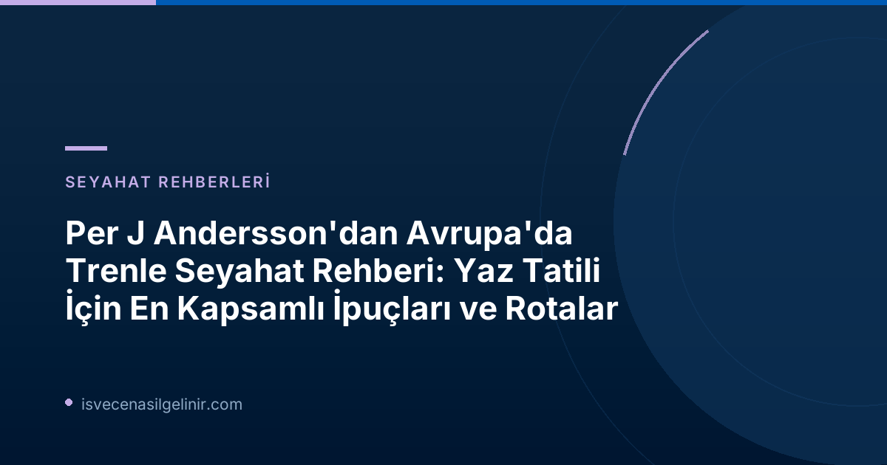

Avrupa'da Trenle Seyahat Neden Bu Kadar Gözde?
Tren yolculukları, sürdürülebilirlik bilinciyle birlikte yeniden yükselişe geçti. SVT'nin verilerine göre, her yıl 50.000'den fazla İsveçli Interrail kartlarıyla Avrupa'yı trenle turluyor. Bu artan ilgi, trenlerin sunduğu konfor, manzara ve çevre dostu olmanın birleşimiyle açıklanabilir. Uçak yolculuğunun aksine, trenler daha yavaş bir tempoda ilerleyerek yolculara gezdikleri yerlerin tadını çıkarma fırsatı sunuyor.
Per J Andersson Kimdir?
Per J Andersson, İsveç'in tanınmış seyahat gazetecilerinden biridir ve Vagabond dergisinin editörlüğünü yapmaktadır. Avrupa'da trenle seyahat konusunda geniş bilgi ve deneyime sahip olan Andersson, okuyucularına rehberlik eden değerli ipuçları sunmaktadır.
Per J Andersson'dan Yaz Rotası Önerileri ve Pratik İpuçları
A'dan Z'ye Rotanız: Londra'dan Stockholm'e Uzanan Bir Yolculuk (70 Yaş Üstü Yolcular İçin Özel)
Per J Andersson, 70 yaş üstü bir çiftin Londra'dan Stockholm'e yapmayı planladığı Interrail seyahati için harika bir rota öneriyor. İlk adım olarak Eurostar ile Londra'dan Amsterdam'a geçin. Ardından Almanya'ya doğru yola çıkarak büyüleyici şehirlerde molalar verin. Tavsiye edilen duraklar arasında tarihi kaplıcalarıyla ünlü Baden-Baden, kültürel zenginlikleriyle Karlsruhe ve liman kenti Bremen bulunuyor. Pek çok kişiye sıkıcı gelse de Hamburg, modern merkezinin dışına çıktığınızda keşfedilmeyi bekleyen bir cennet sunuyor. Sternschanze bölgesi, Isebekkanal'ın kuzeyindeki mahalleler ve Alster Gölü'ndeki Alsterpark, yaz aylarında yürüyüş ve bisiklet turları için ideal. Ayrıca, İsveç'e göçmenlik süreçleri ve İsveç Vatandaşlık Testi hakkında kapsamlı bilgiye ihtiyacınız varsa, ilgili sitemizi ziyaret etmenizi öneririz.
Gurmeler İçin İtalya'da Trenle Lezzet Avı: Kuzey mi, Güney mi?
Yemek ve şarap tutkunları için İtalya, trenle keşfedilmeyi bekleyen bir cennet. Per J Andersson, bu konuda Güney İtalya'yı tercih ettiğini belirtiyor. İşte önerileri:
| Bölge/Şehir | Öne Çıkanlar | Ulaşım Notları |
|---|---|---|
| Puglia (Apulien) | Gallipoli, Otranto gibi güzel şehirler | Güney İtalya'nın "topuk" bölgesi |
| Sicilya | Tarihi Cefalù şehri, güzel plajlar | Milano ve Roma'dan direkt tren seferleri, Messina Boğazı'nda feribot geçişi |
| Sorrento | Büyüleyici sahil kasabası | Napoli'den bölgesel/banliyö trenleri ile kolay ulaşım |
Küçük Çocuklarla Tren Yolculuğu: Neler Bilinmeli?
Çocuklarla tren yolculuğu gözünüzü korkutmasın! Per J Andersson, 6 aylık bebeğinden genç çocuklarına kadar her yaşta çocuğuyla gece trenlerinde sorunsuz bir şekilde seyahat ettiğini belirtiyor. Çocuklar için gece trende uyumak büyülü bir deneyim. En uygun fiyatlı seçenek olan 6 yataklı kuşetli kompartımanları tercih edebilir veya eğer grubunuz 6 kişiyse, tüm kompartımanı kendinize ayırabilirsiniz.
Britanya Adaları'na Trenle Nasıl Gidilir? (Järvsö'den Bir Aile Örneği)
Järvsö'den Britanya'ya gitmek isteyen bir aile için Andersson'ın önerisi, trenle Hamburg'a, oradan Amsterdam'a ve son olarak Manş Tüneli'nden geçen trenle Londra'ya ulaşmak. İngiltere, 200 yıl önce ilk trenlerin ortaya çıktığı bir ülke olarak trenle seyahat için oldukça uygundur. Genellikle önceden rezervasyon yapmaya gerek kalmaz ve Interrail kartıyla doğrudan trenlere binebilirsiniz. Ayrıca, çocuklar (ve tren meraklısı yetişkinler) için 200'den fazla tarihi demiryolu hattında buharlı lokomotifler ve vintage vagonlarla yapılan seyahatler mevcuttur.
Alternatif feribot rotaları:
- Hollanda'dan: Trenle Hoek van Holland'a, oradan Harwich'e feribot.
- Fransa'dan: Trenle Calais veya Dieppe'ye, oradan Dover veya Newhaven'a feribot.
Tren Kompartımanında Yemek Adabı: Neler Yenir, Neler Yenmez?
Paylaşımlı bir tren kompartımanında yemek yemek söz konusu olduğunda, Per J Andersson güçlü kokusu olan yiyeceklerden kaçınmayı öneriyor. Olgunlaşmış peynirler ve İsveç'in meşhur surströming'i kesinlikle yasaklı yiyecekler listesinde yer alıyor. Ancak bezelye gibi kokusu olmayan yiyecekler sorun teşkil etmez.
İsviçre'den Hırvatistan'a: Doğa ve Tarih Dolu Rotalar
İsviçre, İtalya, Slovenya ve Hırvatistan trenle gezginler için harika seçenekler sunuyor. İşte Per J Andersson'ın öne çıkanları:
- İsviçre: Luzern, Chur, Basel. Ancak yüksek fiyatlara dikkat edin.
- Slovenya: Şirin başkent Ljubljana'yı kaçırmayın.
- Hırvatistan: Rijeka yakınlarındaki tarihi sahil kasabası Opatija'ya trenle ulaşabilirsiniz.
- İtalya: Cinque Terre, turist yoğunluğuna rağmen büyüleyici güzelliklere sahip. Köyler arasında yürüyüş yapmayı unutmayın!
Uzun Bir Hafta Sonu İçin Trenle Kaçamak Rotaları
Sadece uzun bir hafta sonunuz varsa bile, Per J Andersson'dan harika tren kaçamakları:
- Baltık Denizi Macerası: Karlskrona veya Nynäshamn'dan feribotla Polonya'daki Gdansk/Gdynia'ya geçin. Ardından Polonya'nın güzel plajlarıyla ünlü Sopot'ta denize girin. Dönüş yolculuğunuzu trenle Berlin ve Hamburg üzerinden İsveç'e yapın.
- Norveç'in Fiyortları: Oslo'ya trenle gidip ardından Bergen Demiryolu'na binin. Yarı yolda Myrdal'da inerek Hardangervidda yaylasından Auerlandsfjorden'e inen muhteşem Flåm Demiryolu'nu deneyimleyin. Ardından tekneyle Bergen'e geçip trenle Oslo'ya ve eve dönün.
Avrupa'da Güneye Uzanan Gece Treni Hatları
Gece trenleri, uzun mesafeleri hem konforlu hem de zaman kazandırarak kat etmek için idealdir. İşte Per J Andersson'ın önerdiği bazı kullanışlı güzergahlar:
- Stockholm-Malmö-Hamburg-Berlin gece treni hattı.
- Hamburg'dan Innsbruck, Münih veya Zürih'e devam eden trenler.
- Milano-Roma-Napoli-Palermo/Syracuse (Sicilya) hattındaki gece trenleri.
Sıkça Sorulan Sorular ve Ek İpuçları
Interrail Kartı Kullanımı
Interrail kartı, Avrupa'da trenle seyahat etmek için oldukça popüler ve avantajlı bir seçenektir. Genellikle birçok ülkede sınırsız veya belirli sayıda seyahat hakkı sunar. Hangi kartın sizin için uygun olduğunu, seyahat sürenize, ziyaret etmek istediğiniz ülkelere ve yaşınıza göre araştırmak önemlidir.
Online Bilet Alımı ve Rezervasyonlar
Birçok Avrupa tren hattı için biletlerinizi ve bazı durumlarda rezervasyonlarınızı online olarak satın alabilirsiniz. Özellikle popüler rotalar veya gece trenleri için erken rezervasyon yapmak, yer garantisi ve daha uygun fiyatlar açısından önemlidir.
Yanınıza Almanız Gerekenler
Uzun tren yolculukları için rahat kıyafetler, atıştırmalıklar, su, kulaklık (paylaşımlı kompartımanlar için), bir kitap veya eğlence amaçlı cihazlar, temel hijyen ürünleri ve yastık veya uyku gözlüğü gibi kişisel eşyalar faydalı olacaktır.
Seyahat Sigortası
Her seyahatte olduğu gibi, Avrupa tren yolculukları için de kapsamlı bir seyahat sigortası yaptırmak, beklenmedik durumlar (tıbbi acil durumlar, bagaj kaybı, seyahat iptalleri vb.) karşısında sizi güvence altına alacaktır.
Referanslar: SVT Nyheter İnrikes, Per J Andersson (Vagabond Redaktörü) 🔗
Hayalinizdeki Avrupa Tren Macerasına Adım Atın!
Per J Andersson'un rehberliğinde Avrupa'nın büyüleyici şehirlerini ve eşsiz doğal güzelliklerini trenle keşfedin. Unutulmaz bir seyahat planlamak için hemen harekete geçin!